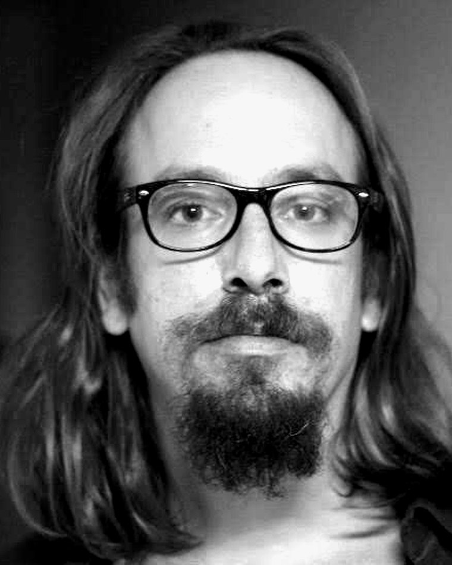
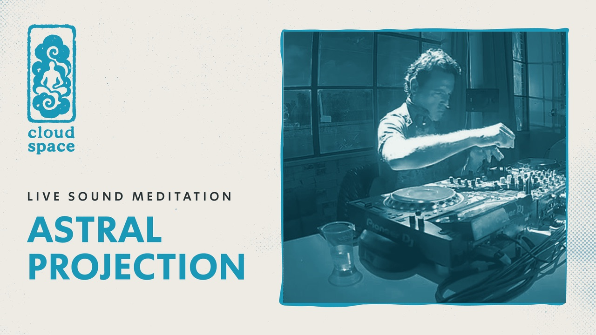
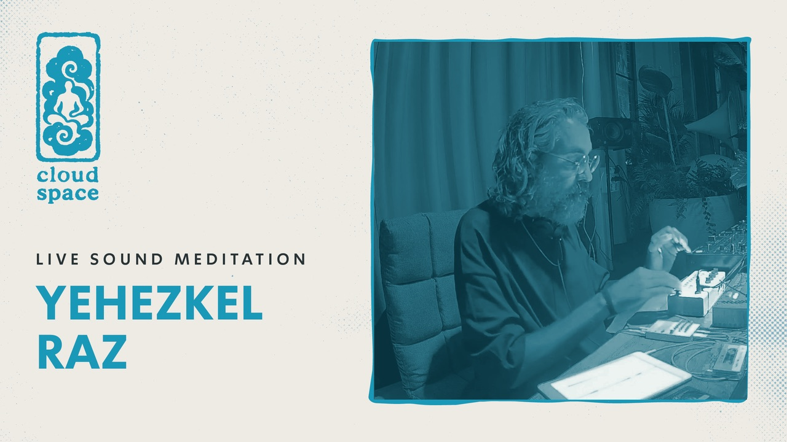
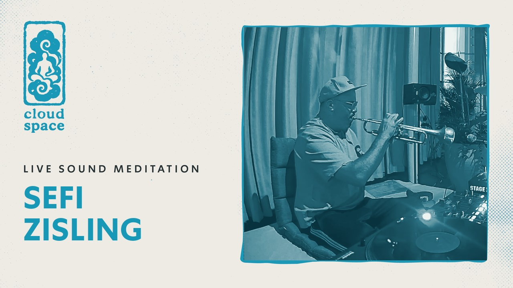
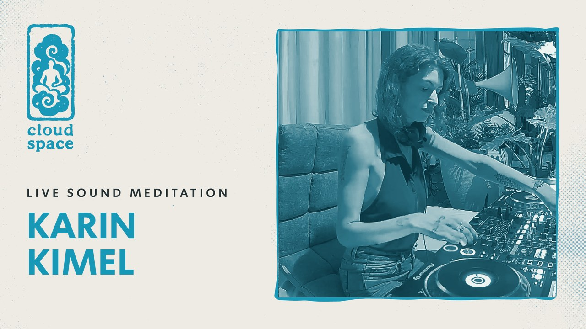

אסף תלמודי
מדיטציית סאונד עמוקה

במפגש הקרוב נארח את אסף תלמודי מפיק מוזיקלי, מלחין, ודוקטור למוזיקולוגיה - מוכר בזכות החיבור שהוא מייצר בין מוזיקה מסורתית ושורשית לבין אלקטרוניקה, רוק ופופ מודרני בין השאר בעבודה עם אמנים מובילים כמו: שלומי שבן, אביתר בנאי, ברי סחרוף ורבים נוספים. אסף ישלב בסשן נגינה חיה על סקסופון, קלרינט, חליל וחמת חלילים אפקטים ולופר.
מה בעצם הולך לקרות שם
אסף תלמודי יתארח לסשן מוזיקלי-מדיטטיבי ארוך, הזדמנות נדירה להיחשף לזרמים התת-קרקעיים המניעים את יצירותיו ולצלול לעומק צלילים ותדרים מרפאים. במפגש נקיים מדיטציה חצי מודרכת בשכיבה במשך 60 דקות. אנו מדייקים את הסטינג בחלל עם סאונד מוקפד.
הסשן מתקיים בקלאוד ספייס - מרחב נשימה אורבני מבית סול תרפי, בשוקן 27 בקרית המלאכה בתל אביב. פופ-אפ מוקפד שנולד כתשובה לרעש ולסטרס של העיר, ומציע בדיוק את ההפך: שעה של שקט, הרפיה ונוכחות.
הכרטיסים לסשן הזה אזלו. הליינאפ ממשיך - סשנים נוספים מתקיימים כל שבוע.
הסשן התקיים. הליינאפ ממשיך - הסשנים הבאים בקלאוד למטה.
שאלות נפוצות
צריך ניסיון קודם?
זו הופעה או מדיטציה?
מה צריך להביא?
צריך לשכב? מה אם יש לי מגבלה פיזית?
אפשר להגיע לבד?
אפשר לאחר?
ככה זה נראה
סשנים מוקלטים מהחלל - לחצו לניגון



